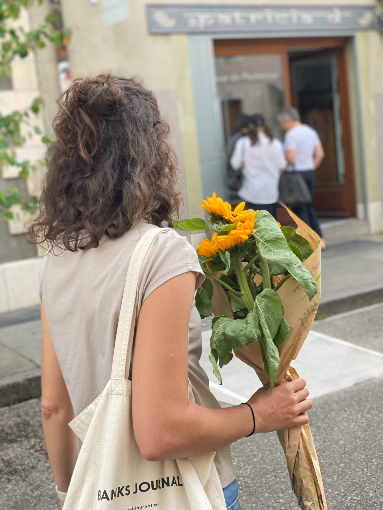
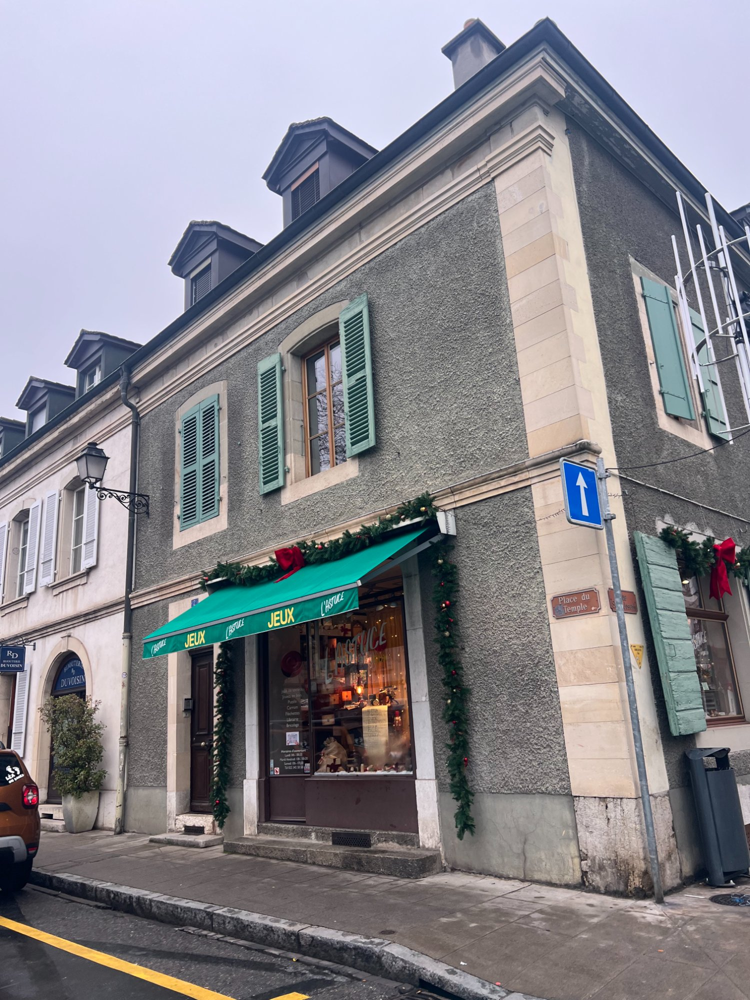
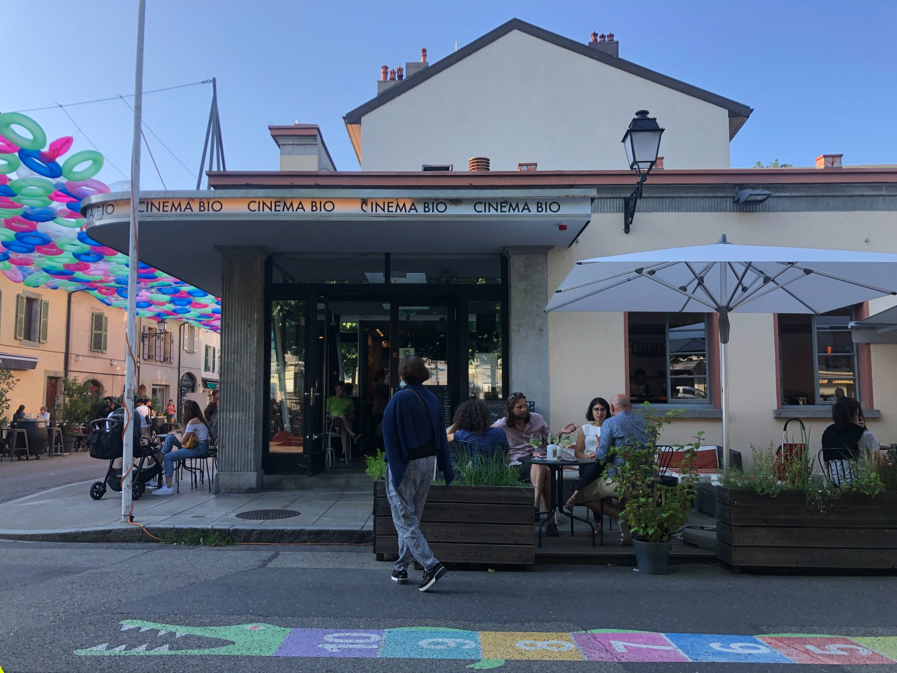

Cross the Arve and something changes. Carouge was built by the King of Sardinia in the 18th century as a deliberate provocation to its buttoned-up neighbour — and it has never fully surrendered that identity. The architecture is different. The pace is different. On a Saturday morning in October, with the plane trees going gold and the market filling the square, it feels nothing like Switzerland.
The market is the anchor. Come hungry, leave with bottles.
"A French guy who married a Swiss woman and makes wine from grapes sourced from vineyards near the airport. Local chefs, sommeliers, and food people treat him like a god — and they're right. It's always good, it's always changing, and he'll pour you glasses to taste for free while you decide. The chalk-price bottles on the barrel are the most honest wine transaction in Geneva. Buy more than you think you need."

"Real Italian guys, real pizza — thin crust, good tomato, nothing too complicated. The reviews online don't do it justice. I've been ten times and it's been good ten times, which is its own kind of excellence. Order a green salad. Sit outside if you can. House white by the carafe."

"Breton oysters, a cold Muscadet, a blue barrel table, and a woman who laughs when you toast her. There is no better use of a Saturday morning. Get six minimum, order a second glass, slow down."

"Not always there, but when he is, don't walk past. He fishes Lac Léman himself and sells what he caught. The smoked whitefish — féra fumée — is exceptional. Buy it, take it home, eat it with capers and good bread."

"Producers, not resellers — the flowers are grown nearby and you can tell. In spring it's tulips under the yellow canopy. In autumn it's sunflowers and chrysanthemums. Buy something every time you go. It's one of the cheapest nice things you can do in Geneva."


"The gravitational centre of Carouge. Small independent cinema with a good café and tables spilling onto the square. Good for a coffee before the market, a glass of wine after. On Saturday mornings in summer the oyster stand sets up right outside it, which is one of the more civilised things Geneva has to offer."
"A proper Geneva pâtisserie with impeccable display cases and things made by someone who cares. Get the all-chocolate madeleines. The best version of that thing you'll find in this city."

"A proper independent toy shop — wooden things, games you've never heard of, things that will last. Swiss toy shops have a different philosophy: things that use imagination, no screens. If you have kids, or know people who do, go in."

"Don't take the tram. Walk from the city centre along the Arve — it takes about 20 minutes and it's genuinely beautiful, especially in autumn when the trees are turning. There are small rapids about halfway that are worth stopping at. The river makes a sound the city doesn't."
